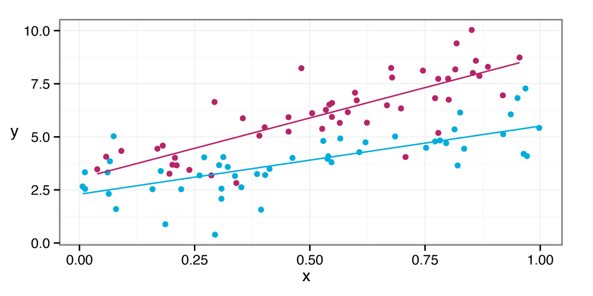

Teaching
Courses and curriculum
Applied Linear Regression
The aim of this course (PUBHLTH 690R) is to provide fundamental statistical concepts and tools relevant to the practice implementing linear regression. This course develops students knowledge of a classic tool of applied biostatistics while introducing them to more advanced concepts such as simulation, sensitivity analyses, and missing data. (Typically offered in the spring semester.)
Data Visualization
This course (PUBHLTH 590F) provides an overview of the theory and practice of data visualization. Students learn how to build, critique, and refine visualizations for both big and small datasets. (Typically offered in the spring semester.)

Open-source stats curriculum
Co-founded by Nick Reich, statsTeachR.org is an online repository for open-access educational resources for teaching statistics using R. Focused on resources for the undergraduate and graduate levels, statsTeachR.org serves as a central repository for user-contributed teaching ``modules'', designed by teachers and for teachers, with an eye towards topic-specific, hands-on, lab-oriented, interactive learning of statistics using R. statsTeachR has received support from the NSF-funded MOSAIC project for teaching statistics.
Workshops and Datafests
We have organized and taught at a series of workshops and datafests in recent years:
- FiveCollege ASA Datafest (2014, 2015)
- HackEbola (UMass, 2014)
- Data Sciences for the Life Sciences in a High Performance Computing Environment (MGHPCC, 2014)
- Data Analysis and Visualization using R (UMass, 2012)
- Dengue Incidence Prediction, (Ministry of Public Health, Thailand, 2012)